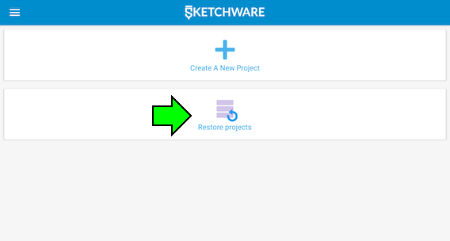
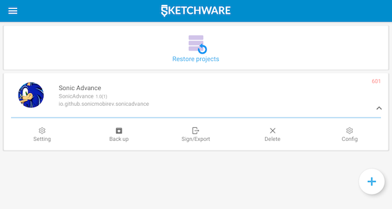
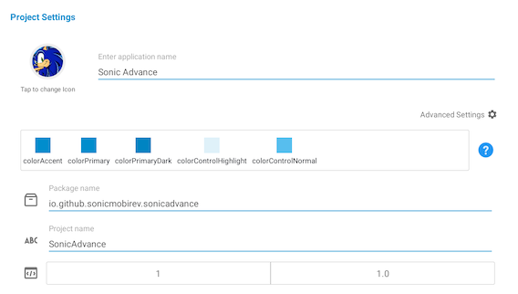
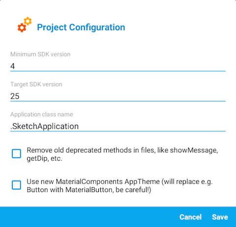
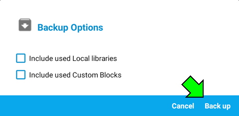
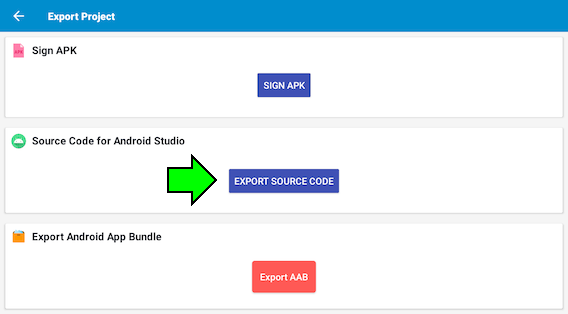
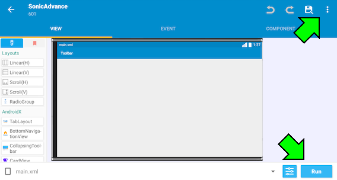
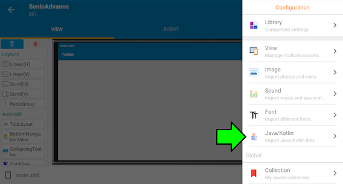

Welcome to the Projects page!
If you want to give help to the Sonic Advance Mobirev project or want to work on your own mod, this page is for you!

Welcome to the Projects page!
If you want to give help to the Sonic Advance Mobirev project or want to work on your own mod, this page is for you!
An Android application can be modded by using different software tools. It's best to work on PC for better visibility, but you can also work on your Android device.
PROGRAMMING TOOL:
First, to work with the source code, .json and text files, you can use a programming tool (like Visual Studio Code or Notepad++).
If you don't have a programming tool at your disposal, you can at least tweak the Java code directly in Sketchware Pro (check the Using Sketchware Pro section for more information).
DRAWING TOOL:
For the sprites, you can change them by using a drawing software tool (like Paint.net, IbisPaint or Paint Tool SAI).
APK DECOMPILING TOOL:
Finally, you need an APK editor software tool (like APK Easy Tool, APK Editor or MT Manager) to decompile the .apk file after using Sketchware Pro.
For file searching on Android, you need an application to access hidden folders, because Sketchware Pro has a hidden folder as ".sketchware". The most recommended application is ZArchiver, which allows you to access hidden folders.
If you can't access hidden folders on your Android folder, you need a special treatment for your device, either by rooting your phone, or by using Shizuku.
To access the game content, you need to download the source code. After downloading, you will find a .zip or a .swb file in your download folder.
You can extract a .swb file either by using an extractor program like 7-Zip, or by converting the .swb file into a .zip file. You can also create a .swb file by converting a .zip file into a .swb file. Make sure to select the "data" folder, "resources" folder and the "project" file to compress them in the .zip file.
Inside the .swb file are different folders and content. The "data" folder is where the game content is located, and the "resources" folder contains regular Sketchware content, though the only relevant content is the application icon.
DATA FOLDER:
In the "data" folder is 2 folders and files related to Sketchware Pro's functionalities.
The "files" folder contains the game assets, Java code, application name and mipmap icons, whereas the "Injection" folder contains files related to the AndroidManifest.
ANDROID MANIFEST & APKTOOL FILES:
While Sketchware Pro is a great application for building .apk files, it has some issue such as:
Because Sketchware Pro has multiple issues regarding .apk file building, there are 2 special files in the source code: The AndroidManifest.xml and the apktool.yml file. The AndroidManifest.xml is especially useful to mitigate the exiting application problem.

With the .swb file, you can build the game application by using Sketchware Pro.
In Sketchware Pro, select "Restore projects" and find your .swb file you have created.

Once you have loaded the project, you can either enter the project or configure certain settings.
There are multiple options to choose from. You can configure certain settings, back up the project, sign the .apk file or delete the project.

In the Settings menu, you change the application name, package name and version numbers.

The Configuration menu is mostly used to change the SDK version number, though for modern Android compatibility purposes, it is recommend to keep the SDK versions as they are.

The Back up menu allows you to back up and save your project on your device. The backed up project is located as a .swb file in ".sketchware/backups/project name".

The Sing/Export menu lets you sign the .apk file or export the source code for Android Studio. Once the exportation is done, the local path of the exportation is displayed.

After entering the project, you will be granted will a vareity of creative options from Sketchware Pro.
You can build the application file by pressing "Run" on the bottom-right side of the screen. If the .apk building is complete, your device asks you if you want to install the application.
If the application cannot be built, an error pop-up named "Show compile log" is displayed. You can check the compilation log to understand where the error comes from. Make sure that the code is well structured to proceed the application building.

The benefit of using Sketchware Pro is the ability to build Android applications by using Java code, making game development easier than programming in bytecode (like Smali).
If you want to check the Java code of a Sketchware Pro project, press the 3 dots on the top-right side of the screen and select "Java/Kotlin". You can find the different folders and .java files related to the code.